原文连接:https://www.cnblogs.com/dashucoding/p/10730900.html
php和JavaScript，掌握JavaScript基础，自定义函数，流程控制语句，事件，调用JavaScript脚本，在PHP中使用JavaScript。
JavaScript是网景公司开发的，是一种基于对象和事件驱动并具有安全性能的解释型脚本语言。
JavaScript基础，数据类型，变量，注解
数据类型，unll，undefined，对象型，布尔型，数值型，字符串型。
变量，指在程序中已经存在的命名存储单元，存放信息的容器。
abstract, continue, finally, instanceof, private, this
class, final, in, package, synchronized, with
char, false, import, null, switch, while
catch, extends, implements, new, super, void
case, else, goto, native, static, var
byte, double, function, long, short, true
break, do, for, interface, return, typeof
boolean, default, float, int, public, throw自定义函数
function 函数名([参数]){
return var;
}
函数名();流程控制语句：
条件语句
if(条件表达式){
语句块
}
if(条件表达式)
{
语句块1;
}
else
{
语句块2;
}
switch(表达式或变量){
case 常量表达式1:
语句块1;
break;
case常量表达式2:
语句块2;
break;
…
case常量表达式n:
语句块n;
break;
default:
语句块n+1;
break;
} <script language="javascript">
function check(){
var year1 = form.year.value;
if((year1%4==0&&(year1%100)!=0){}
}
</script>循环语句
while(条件表达式){
语句块
}
for (初始化循环变量;循环条件;确定循环变量的改变值){
语句块;
}跳转语句，break语句终止循环，continue语句跳出本次循环，进入下一次循环。
事件
onclick 鼠标点击事件
ondblclick 鼠标双击事件
onmousedown 鼠标按下事件
onmouseup 鼠标按下后松开事件
onmouseover 鼠标移动到某对象上方事件
onmousemove 鼠标移动时触发事件
onkeypress 键盘按下且释放事件
onkeydown 键盘按下事件
onkeyup 键盘按下后松开时触发的事件
onabort 图片在下载时被用户中断时触发
onload 页面内容完成时触发
onresize 浏览器窗口大小被改变
onunload 当前页面将被改变时触发此事件
onblur 失去焦点
onchange 内容发生改变
onfocus 获取焦点
onreset 和 onsubmit嵌入JavaScript脚本
<script language="javascript">
…
</script>
<input type="submit" name="Submit" value="检测" onClick="check();">
<script src＝url language="Javascript"></script><script language="javascript">
function check(){
if(myform.subject.value==""){
alert("文章主题不能为空！！");myform.subject.focus();return false;
}
if(myform.content.value==""){
alert("文章内容不能为空！！");myform.content.focus();return false;
}
if(myform.author.value==""){
alert("作者不能为空！！");myform.author.focus();return false;
}
alert("成功通过验证！");
}
</script>系统时区设置，PHP日期和时间函数，应用
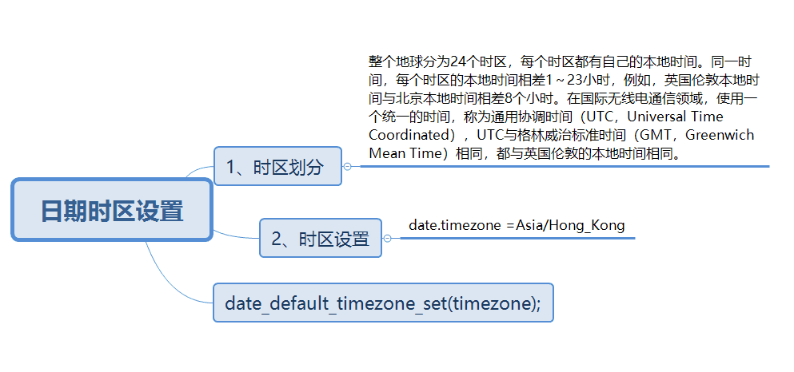
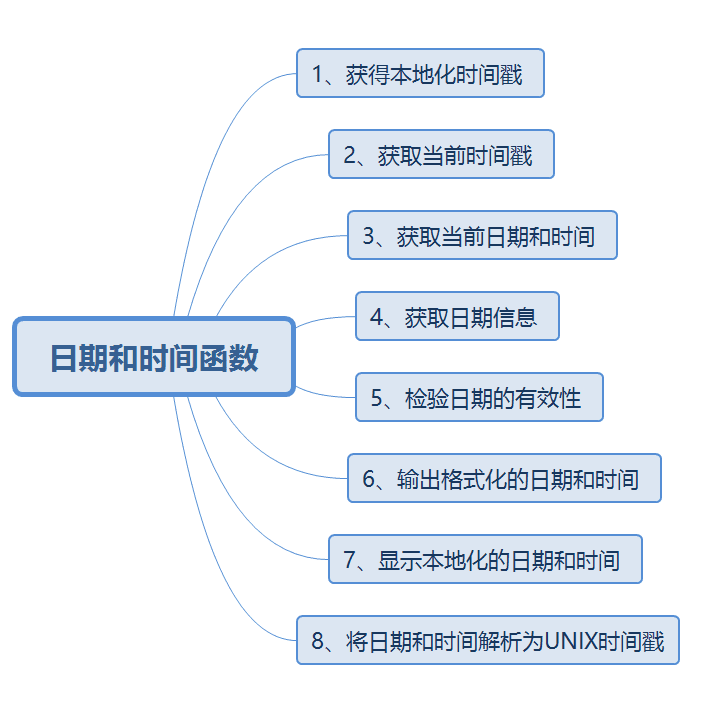
mktime()函数将一个时间转换成UNIX的时间戳值
int mktime(int hour, int minute, int second, int month, int day, int year, int [is_dst] )hour 小时数， minute 分钟数，second秒数，month月份数，day天数，year年份数，is_dst在夏令时设置为1，不是为0，不确定为-1获取时间戳
int time ( void )获取当前日期和时间
date(string format,int timestamp)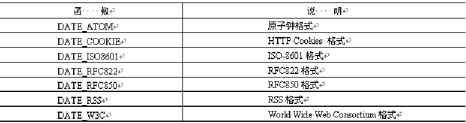
获取日期信息
array getdate(int timestamp)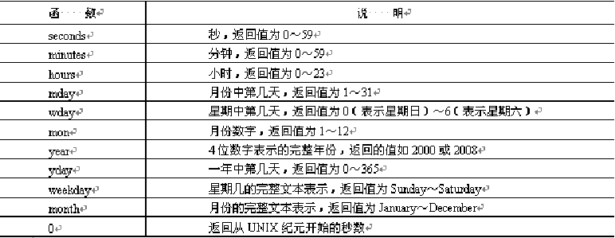
检验日期的有效性
bool checkdate(int month,int day,int year)输出格式化的日期和时间
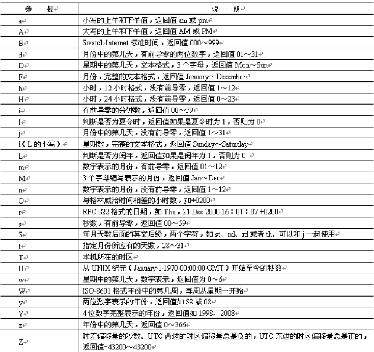
Y-m-d H:i:s显示本地化的日期和时间
setlocale()函数设置本地化环境
strftime()函数格式化输出日期和时间
string setlocale(string category, string locale)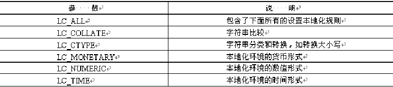
string strftime(string format, int timestamp)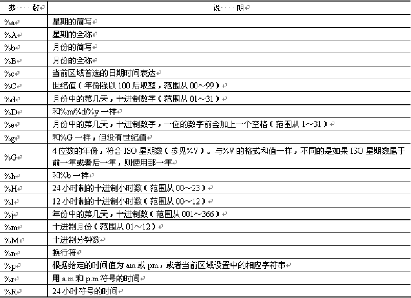
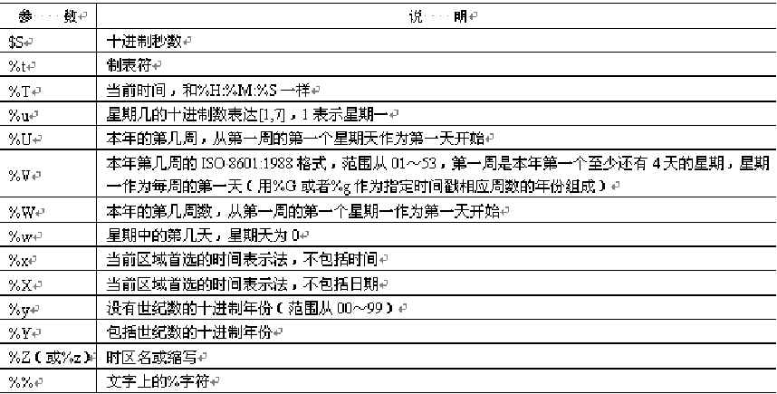
将日期和时间解析为UNIX时间戳
int strtotime ( string time [, int now] ) 将任何英文文本的日期和时间解析为UNIX时间戳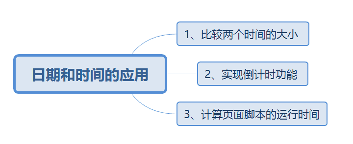
比较时间，要将时间解析为时间戳，strtotime()函数
<?php
$time1 = date("Y-m-d H:i:s");
$time2 = "2006-6-6 10:30:00";
echo "变量1的时间为：".$time1."<br>";
echo "变量2的时间为：".$time2."<p>";
if(strtotime($time1) - strtotime($time2) < 0){
echo "\$time1 早于 \$time2 ";
}else{
echo "\$time2 早于 $time1 ";
}
?><?PHP
$time1 = strtotime(date( "Y-m-d H:i:s"));
$time2 = strtotime("2010-5-2 12:10:00");
$time3 = strtotime("2014-2-4");
$sub1 = ceil(($time2 - $time1) / 3600); //60 * 60
$sub2 = ceil(($time3 - $time1) / 86400); //60 * 60 * 24
echo "离放假还有$sub1 小时!!!" ;
echo "<p>";
echo "离元旦还有$sub2 天!!!";
?> 计算页面脚本的运行时间
string microtime(void)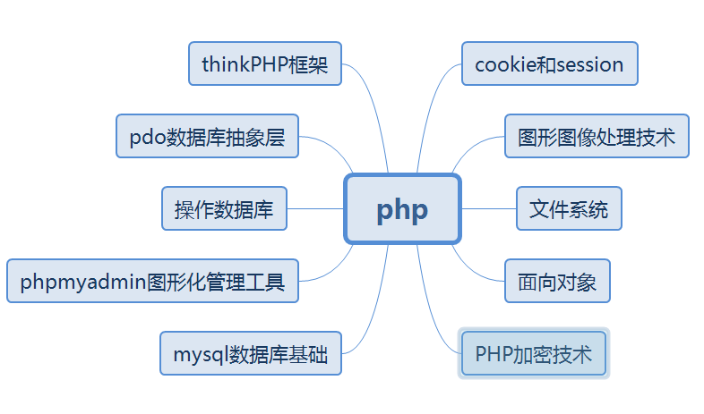
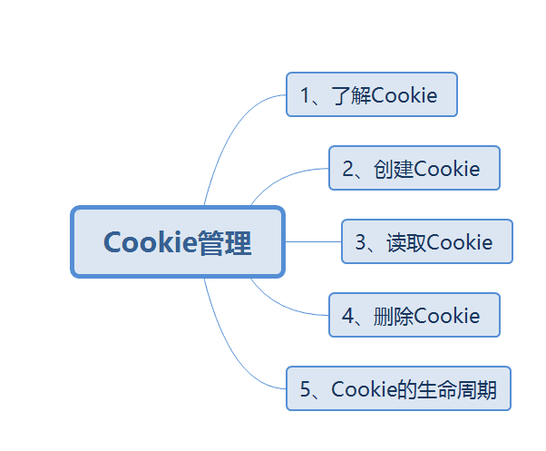
利用cookie来区别不同用户
Cookie是一种在远程浏览器端存储数据并以此来跟踪和识别用户的机制。
文本文件的命令格式如下：
用户名@网站地址[数字].txt
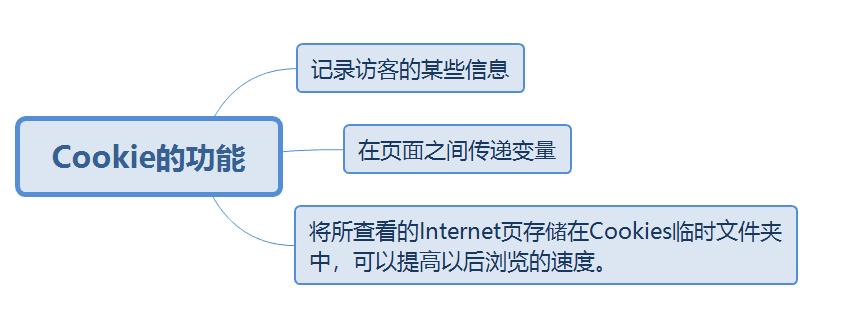
创建cookie:
bool setcookie(string name[,string value[,int expire[, string path[,string domain[,int secure]]]]])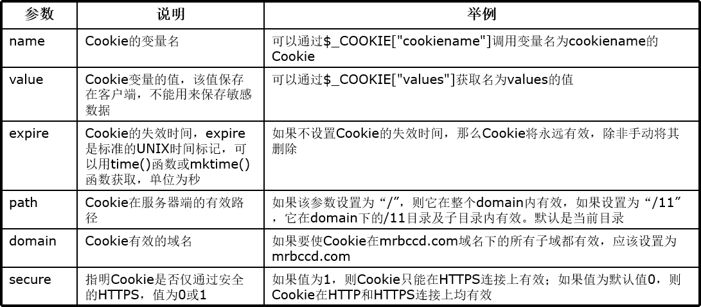
<?php
setcookie("TMCookie","www.dashucoding.cn");
setcookie("TMCookie","www.dashucoding.cn", time()+60);
// 有效时间设置 60秒，目录"/tm/", 域名
setcookie("TMCookie", $value, time() + 3600, "/tm/", ".dashucoding.cn", 1);
?>读取cookie
<?php
if(!isset($_COOKIE["visittime"])){
setcookie("visittime",date("y-m-d H:i:s"));
echo "欢迎第一次";
}else{
setcookie("visittime",date("y-m-d H:i:s"), time()+60);
echo "上次访问".$_COOKIE["visittime"];
echo "<br>"
}
echo "本次访问".date("y-m-d H:i:s");
?>删除cookie:使用setcookie()函数删除，手动删除（在浏览器中手动删除Cookie）
setcookie("name","", time()-1);浏览器最多允许存储300个Cookie文件，每个Cookie文件支持最大容量为4KB，每个域名最多支持20个Cookie。
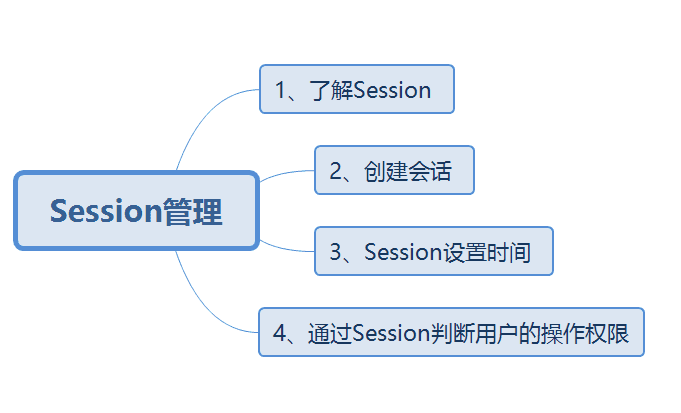
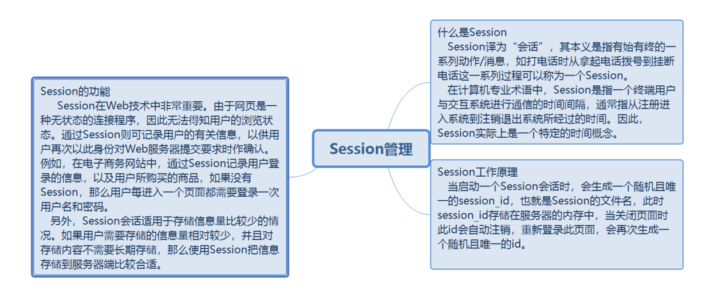
启动会话→注册会话→使用会话→删除会话
session_start ()函数创建会话：
bool session_start(void)通过session_register()函数创建会话用来为会话创建一个变量来隐含地启动会话。使用这个函数，不用调用session_start()函数，因为hi隐含地调用session_start()函数。
注册会话：
<?php
session_start(); //启动Session
$_SESSION["admin"] = null; //声明一个名为admin的变量，并赋空值
?>使用会话:
<?php
if ( !empty ( $_SESSION['session_name'])) //判断用于存储用户名的Session会话变量是否为空
$myvalue = $_SESSION['session_name'] ;//将会话变量赋给一个变量$myvalue
?>
if (! isset ( $_SESSION )) {
session_start ();
}
if (! isset ( $_SESSION ['userName'] )) {
header ( "location:login.php" );
}
$userName = $_SESSION ['userName'];删除会话
删除单个会话、删除多个会话和结束当前会话
删除单个会话
unset ( $_SESSION['user'] ) ;删除多个会话
$_SESSION = array() ;结束当前会话
session_destroy() ;Session设置时间
使用session_set_cookie_params()设置Session的失效时间
使用setcookie()函数可对Session设置失效时间
<?php
$time = 1*60;
session_set_cookie_params($time);
session_start();
$_SESSION[username] = "mr"
?><?php
session_start();
$time=1*60;
setcookie(session_name(), session_id(), time()+$time,"/");
$_SESSION['user']='mr';
?>客户端禁止Cookie:
设置php.ini文件中的session.use_trans_sid = 1
编译时打开-enable-trans-sid选项，让PHP自动跨页面传递session_id
隐藏表单传递session_id<form id="form1" name="form1" method="post" action="xx.php?<?=session_name();?>=<?=session_id();?>">
<?php
$sess_name = session_name();
$sess_id = $_GET[$sess_name];
session_id($sess_id);
session_start();
$_SESSION['admin']='mr';
?>页面a传值到页面b:
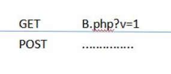
页面a传值给页面b,页面c,页面d等，，，如何做？
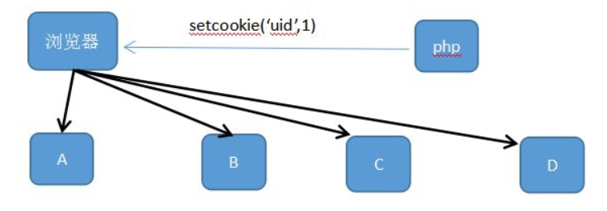
但是用cookie不安全，如果有人修改就非常危险了。
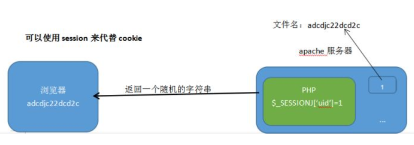
加密。使用哈希函数MD5：
MD5（uid+一个固定的随机的字符串）
if (! isset ( $_SESSION )) {
session_start ();
}
if (! isset ( $_SESSION ['userName'] )) {
header ( "location:login.php" );
}
$userName = $_SESSION ['userName'];登录划分
<!DOCTYPE HTML PUBLIC "-//W3C//DTD HTML 4.01 Transitional//EN" "http://www.w3.org/TR/html4/loose.dtd">
<html>
<head>
<meta http-equiv="Content-Type" content="text/html; charset=gb2312">
<title>博客用户登录</title>
<style type="text/css">
<!--
.style1 {color: #FF0000}
-->
</style>
</head>
<body>
<script language="javascript">
function check(form){
if(form.user.value==""){
alert("请输入用户名");form.user.focus();return false;
}
if(form.pwd.value==""){
alert("请输入密码");form.pwd.focus();return false;
}
form.submit();
}
</script>
<form name="form1" method="post" action="default.php">
<table width="521" height="394" border="0" cellpadding="0" cellspacing="0">
<tr>
<td valign="top" background="images/login.jpg"><table width="521" border="0" cellspacing="0" cellpadding="0">
<tr>
<td width="262" height="218"> </td>
<td width="259"> </td>
</tr>
<tr>
<td height="24" align="right">用户名：</td>
<td height="24" align="left"><input name="user" type="text" id="user" size="20"></td>
</tr>
<tr>
<td height="24" align="right">密 码：</td>
<td height="24" align="left"><input name="pwd" type="password" id="pwd" size="20"></td>
</tr>
<tr align="center">
<td height="24" colspan="2"><input type="submit" name="Submit" value="提交" onClick="return check(form);">
<input type="reset" name="Submit2" value="重填"></td>
</tr>
<tr>
<td height="76" align="right"><span class="style1">超级用户：tsoft<br>
密 码：111 </span></td>
<td><span class="style1"> 普通用户：zts<br>
密 码：000</span></td>
</tr>
</table></td>
</tr>
</table>
</form>
</body>
</html><?php
session_start();
$_SESSION[user]=$_POST[user];
$_SESSION[pwd]=$_POST[pwd];
if($_SESSION[user]==""){
echo "<script language='javascript'>alert('请通过正确的途径登录本系统！');history.back();</script>";
}
?>
<?php if($_SESSION[user]=="123" && $_SESSION[pwd]=="123456"){echo "管理员";}else{echo "普通用户";}?><a href="safe.php">注销用户</a>
<?php
session_start();
unset($_SESSION['user']);
unset($_SESSION['pwd']);
session_destroy();
header("location:index.php");
?>Session高级应用
session是将session的信息保存在服务器上，通过session id来传递客户端的信息，同时服务器接收到session id后，根据这个id来提供相关的session信息资源。
cookie是将信息以文本文件的形式保存在客户端，通过浏览器进行管理和维护。
如果将session保存到临时目录中，会降低服务器的安全性和效率，使用session_save_path()函数解决session临时文件问题。
<?php
$path="./tmp/';
session_save_path($path);
session_start();
$_SESSION[username]=true;
?>Session缓存
string session_cache_limiter ( [string cache_limiter])int session_cache_expire ( [int new_cache_expire])cookie和session区别和小结
cookie是通过扩展http协议实现的，主要包括有名字，值，过期时间，路径和域。如果cookie不设置时间，就以浏览器关闭而关闭，cookie一般存储在内存中，不是在硬盘上，设置了时间，不随浏览器的关闭而消失，cookie仍然有效到超过设定的过期时间。
session和session id，保存session id的方式可以采用cookie，cookie数据存放在浏览器上，session数据放在服务器上，cookie不安全，session安全，session会在一定时间内保存在服务器上，访问多了，会占用服务器的性能，考虑到减轻服务器性能，应该使用cookie。
浏览器最多允许存储300个cookie文件，每个cookie文件最多保存数据不能超过4kb，很多浏览器都限制一个站点最多保存20个cookie，每个域名最多支持20个cookie。如果超过，浏览器会自动删除cookie文件。
登录信息等重要信息保存在session中，不重要的保存在cookie中。保存在session中，很容易丢失，所以要结合cookie中，当session丢失时，如果cookie还在我们设定的有效期内，就可以再一次从cookie中取出值放进session里，
<sessionState timeout="5" mode="InProc" />
<sessionState timeout="2" mode="StateServer" />
cookie有效期的设置
httpCookie.Expires = DateTime.Now.AddMinutes(2);
是否有权限访问该网页
if (Request.Cookies["httpCookie"] != null)
{
Session["admin"] = Request.Cookies["httpCookie"].Values["admin"].ToString();
}
if (Session["admin"] == null)
{
this.ClientScript.RegisterStartupScript(this.GetType(), "", "<script>alert('请重新登 录');location.href='logins.aspx'</script>");
}PHP禁用Cookie之后Session还能用吗？能。
在登录之前提醒用户必须打开cookie。
设置php.ini配置文件中的“session.use_trans_sid = 1”，或者编译时打开打开了“--enable-trans-sid”选项，让PHP自动跨页传递Session ID。
手动通过URL传值，隐藏表单传递Session ID。
用文件、数据库等形式保存Session ID，在跨页过程中手动调用。
COOKIE和SESSION的使用
创建cookie值：
// 函数设置Cookie
Setcookie("标识键值","Cookie值","有效时间","有效作用域 / 表示当前网站下好使");
// 赋值设置Cookie
$_COOKIE['标识键值'] = "Cookie值";修改Cookie值:
// 函数设置Cookie
Setcookie("标识键值","Cookie新值","新有效时间","新的有效作用域");
// 赋值设置Cookie
$_COOKIE['标识键值'] = "Cookie新值";删除cookie值：
// 函数设置Cookie
Setcookie("标识键值","空值",time()-1);查看Cookie值:
// 查看所有Cookie值
var_dump($_COOKIE);
// 查看具体的Cookie值
var_dump($_COOKIE['键值']);举例:
<?php
// 增加 Cookie
// 设置Cookie函数法 setCookie();
setCookie("test1","test1");
// 设置Cookie赋值法
$_COOKIE['test2'] = "test2";
// 修改Cookie
// 修改Cookie setCookie()
setCookie("test1","test1->test3");
// 修改Cookie赋值法
$_COOKIE["test2"] = "test2->test4";
// 查询所有Cookie值
var_dump($_COOKIE);
// 查询键值为test2的值
var_dump($_COOKIE['test2']);
// 删除键值为test1的值
setCookie("test1","",time()-1);
// 设置test2值为空
$_COOKIE['test2'] = "";
var_dump($_COOKIE);使用setcookie设置或修改cookie后，第一次刷新页面打印cookie不会有结果，只会生成cookie文件，第二次刷新时才有获取新增或修改的值，使用$_COOKIE新增或修改值，在修改后第一次请求就可以获取结果。
使用setcookie删除cookie值时，第一次删除只是删除了文件，刷新页面后，对应的cookie值已经被删除。
所有setcookie函数作用第一次不会产生结果，第二次才会，使用$_COOKIE操作的数据第一次就会了。
SESSION会话控制
session内容一般以文件的形式存储于服务器中，Cookie存储的是键值为“PHPSESSID”的Seeion_id值，一般服务器存储的session文件也会在30分钟后自动清除。
添加session:
$_SESSION['session键值'] = "session值";修改session:
$_SESSION['session键值'] = "session新值";查看session值:
// 查看全部session
var_dump($_SESSION);
// 单独查看键值
var_dump($_SESSION['test']);删除session:
// 删除session值，但保留数据类型
$_session['session键值'] = array();
// 删除cookie中的session_id
$session_id = session_name();
setCookie($session_id,"",time()-1);
// 释放当前在内存中已经创建的所有$_SESSION变量
session_unset();
// 删除当前用户对应的session文件以及释放session_id
session_destroy();使用举例:
<?php
// 开启session
session_start();
// 增加session
$_SESSION['test'] = "session内容";
$_SESSION['test1'] = "session内容";
// var_dump($_SESSION['test']);
// 修改session
$_SESSION['test'] = "session修改内容";
// var_dump($_SESSION['test']);
// 查看全部session
var_dump($_SESSION);
// 单独查看键值为test的Session值
var_dump($_SESSION['test']);
// 删除session
// 删除session的变量值
// $_SESSION['test'] = array();
// 删除所有的SESSION一般用于退出操作
// 1使客户端COOKIE中的SESSIONID过期
// $session_id = Session_name();
// setcookie($session_id,"",time()-1);
// 释放当前在内存中已经创建的所有$_SESSION变量，但不删除session文件以及不释放对应的session_id
// session_unset();
// 删除当前用户对应的session文件以及释放session_id，但内存中的$_SESSION变量内容依然保留
session_destroy();
var_dump($_SESSION);cookie和session区别：
存储位置，数量和大小限制，内容区别，路径区别
session值没有大小的限制，但过多，会导致服务器压力大，内容，cookie保存的是字符串，session保存的数据是对象
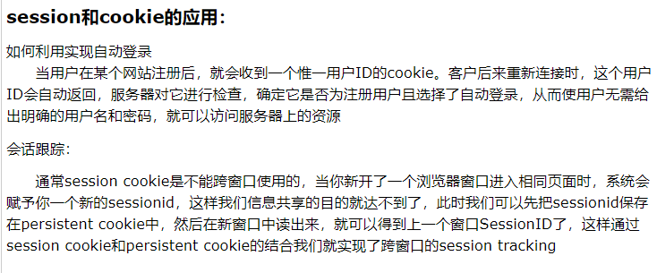
session 实现，存储
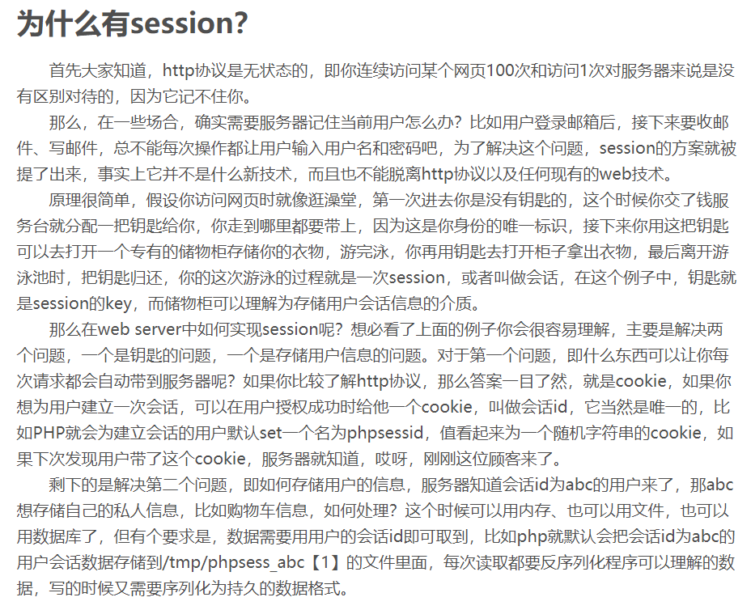
session_id获取/设置当前会话 ID
session_id ([ string $id ] ) : stringphp中的cookie使用
cookie是保存在客户端浏览器中的，cookie是http头的一部分，通过浏览器请求页面时，通过http头的形式发送过去，被请求的页面时，通过PHP来获取cookie的值。
设置cookie:
bool setcookie( string name,[string value],[int expire],[string path],[string domain]);name:为cookie名
value:为cookie值
expire:为过期时间
path为服务器端有效路径
domain:为cookie有效的域名
实例：
setcookie('text','text',time()+3600*12,'/','www.test.com');获取cookie:
$cookieValue ='';
if (isset($_COOKIE['text'])) //首先判断是否已设置了该cookie
{
$cookieValue = $_COOKIE['text'];
}销毁cookie:
setcookie("user", "", time()-3600);小结：
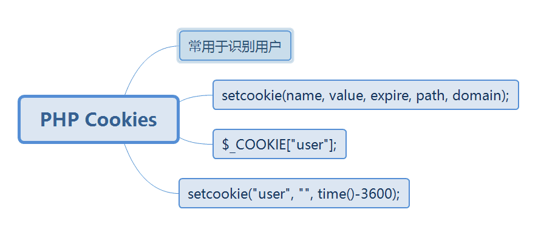
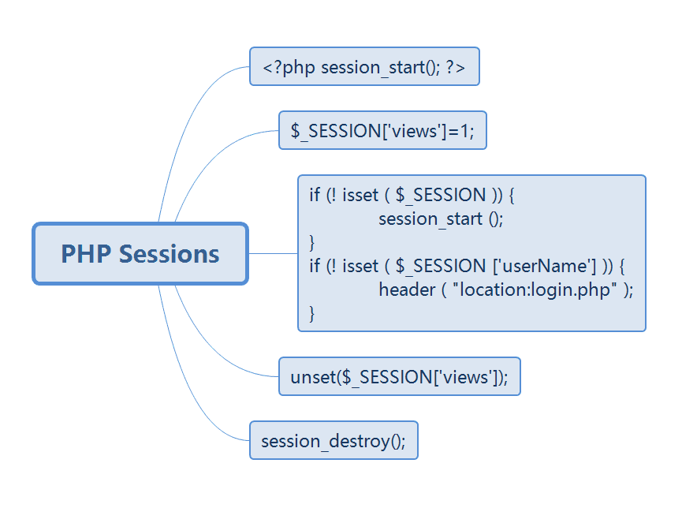
Session高级应用
session临时文件，session缓存，session数据库存储
临时文件session_save_path()存储session临时文件，可以缓解临时文件存储导致服务器效率降低等问题。
<?php
$path="./tmp/";
session_save_path($path);
session_start();
$_SESSION[username] = true;
?>Session缓存
Session缓存的完成使用的是session_cache_limiter()函数
string session_cache_limiter ( [string cache_limiter])session_cache_expire()函数，缓存时间的设置
int session_cache_expire ( [int new_cache_expire])实例：
<?php
session_cache_limiter('private');
$cache_limit = session_cache_limiter(); // 开启客户端缓存
session_cache_expire(30);
$cache_expire = session_cache_expire(); // 设置客户端缓存时间
session_start();
?>Session数据库存储
PHP中的session_set_save_handler()函数
bool session_set_save_handler ( string open, string close, string read, string write, string destroy, string gc)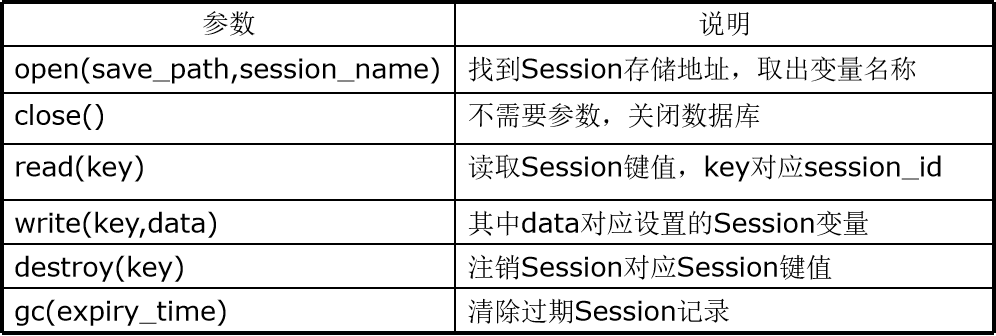
封装session_open()函数，连接数据库
function _session_open($save_path,$session_name)
{
global $handle;
$handle = mysql_connect('localhost','root','root') or die('数据库连接失败'); //连接MySQL数据库
mysql_select_db('db_database11',$handle) or die('数据库中没有此库名'); //找到数据库
return(true);
}封装session_close()函数，关闭数据库连接
function _session_close()
{
global $handle;
mysql_close($handle);
return(true);
} 封装session_read()函数
function _session_read($key)
{
global $handle; //全局变量$handle连接数据库
$time = time(); //设定当前时间
$sql = "select session_data from tb_session where session_key = '$key' and session_time > $time";
$result = mysql_query($sql,$handle);
$row = mysql_fetch_array($result);
if ($row){
return($row['session_data']); //返回Session名称及内容
}else{
return(false);
}
}封装session_write()函数
function _session_write($key,$data)
{
global $handle;
$time = 60*60; //设置失效时间
$lapse_time = time() + $time; //得到UNIX时间戳 $sql = "select session_data from tb_session where session_key = '$key' and session_time > $lapse_time";
$result = mysql_query($sql,$handle);
if (mysql_num_rows($result) == 0 ) { //没有结果
$sql = "insert into tb_session values('$key','$data',$lapse_time)";//插入数据库sql语句
$result = mysql_query($sql,$handle);
}else{
$sql = "update tb_session set session_key = '$key',session_data = '$data',session_time = $lapse_time where session_key = '$key'"; //修改数据库sql语句 $result = mysql_query($sql,$handle);
}
return($result);
} 封装session_destroy()函数
function _session_destroy($key)
{
global $handle;
$sql = "delete from tb_session where session_key = '$key'"; //删除数据库sql语句
$result = mysql_query($sql,$handle);
return($result);
}封装session_gc()函数
function _session_gc($expiry_time)
{
global $handle;
$lapse_time = time(); //将参数$expiry_time赋值为当前时间戳
$sql = "delete from tb_session where expiry_time < $lapse_time"; //删除数据库sql语句
$result = mysql_query($sql,$handle);
return($result);
}结言
好了，欢迎在留言区留言，与大家分享你的经验和心得。
感谢你学习今天的内容，如果你觉得这篇文章对你有帮助的话，也欢迎把它分享给更多的朋友，感谢。
感谢！承蒙关照！您真诚的赞赏是我前进的最大动力！